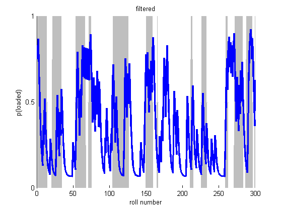
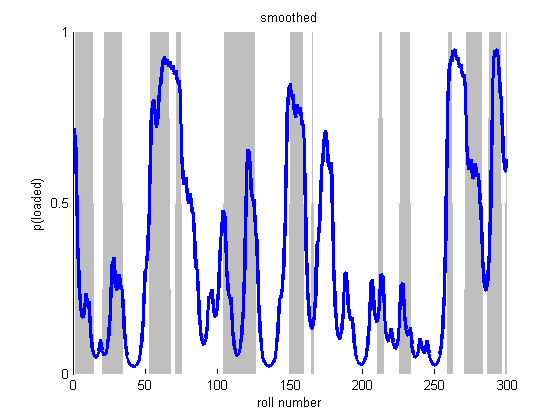
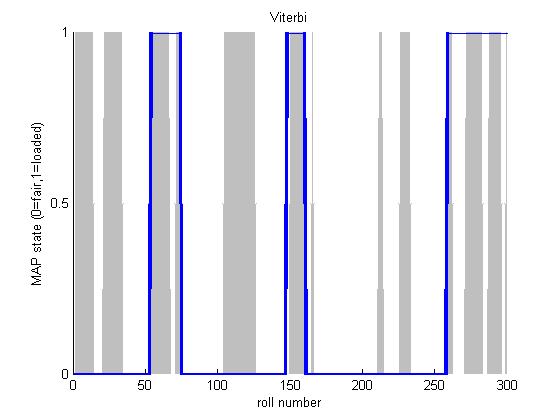

HMMs and the occasionally Dishonest Casino
This is an example from 'Biological Sequence Analysis: Probabilistic Models Proteins and Nucleic Acids' by Durbin, Eddy, Krogh, & Mitchison, (1998) p54.
Contents
Description
Suppose a casino uses a fair die most of the time but occasionally switches to and from a loaded die according to Markovian dynamics. We observe the dice rolls but not the type of die. We can use a Hidden Markov Model to predict which die is being used at any given point in a sequence of rolls. In this example, we know both the transition and emission probabilities.
Specifying the Model
Since we are not learning the parameters, we must specify the observation/emission model, the transition matrix, and the distribution over starting states.
fair = 1; loaded = 2;
Observation Model
We will use a discrete observation model, one discrete distribution per hidden state of which there are two.
setSeed(1); obsModel = [1/6 , 1/6 , 1/6 , 1/6 , 1/6 , 1/6 ; % fair die 1/10, 1/10, 1/10, 1/10, 1/10, 5/10 ]; % loaded die
Transition Matrix
transmat = [0.95 , 0.05;
0.10 , 0.90];
Distribution over Starting States
pi = [0.5, 0.5];
Sample
We now sample a single sequence of 300 dice rolls
len = 300; nsamples = 1; markov.pi = pi; markov.A = transmat; hidden = markovSample(markov, len, nsamples); observed = zeros(1, len); for t=1:len observed(1, t) = sampleDiscrete(obsModel(hidden(t), :)); end
Fit via EM (pretending we don't know the hidden states)
nstates = size(obsModel, 1); modelEM = hmmFitEm(observed, nstates, 'discrete', ... 'maxIter', 1000, 'verbose', true, 'convTol', 1e-7, 'nRandomRestarts', 3);
********** Random Restart 1 ********** 1 loglik: -641.736 2 loglik: -544.047 3 loglik: -543.954 4 loglik: -543.875 5 loglik: -543.806 6 loglik: -543.746 7 loglik: -543.694 8 loglik: -543.647 9 loglik: -543.606 10 loglik: -543.57 11 loglik: -543.537 12 loglik: -543.509 13 loglik: -543.483 14 loglik: -543.46 15 loglik: -543.439 16 loglik: -543.421 17 loglik: -543.404 18 loglik: -543.389 19 loglik: -543.376 20 loglik: -543.364 21 loglik: -543.353 22 loglik: -543.343 23 loglik: -543.334 24 loglik: -543.326 25 loglik: -543.318 26 loglik: -543.312 27 loglik: -543.306 28 loglik: -543.3 29 loglik: -543.295 30 loglik: -543.29 31 loglik: -543.286 32 loglik: -543.282 33 loglik: -543.278 34 loglik: -543.275 35 loglik: -543.272 36 loglik: -543.269 37 loglik: -543.266 38 loglik: -543.264 39 loglik: -543.262 40 loglik: -543.259 41 loglik: -543.257 42 loglik: -543.256 43 loglik: -543.254 44 loglik: -543.252 45 loglik: -543.251 46 loglik: -543.249 47 loglik: -543.248 48 loglik: -543.247 49 loglik: -543.246 50 loglik: -543.245 51 loglik: -543.244 52 loglik: -543.243 53 loglik: -543.242 54 loglik: -543.241 55 loglik: -543.24 56 loglik: -543.239 57 loglik: -543.239 58 loglik: -543.238 59 loglik: -543.237 60 loglik: -543.237 61 loglik: -543.236 62 loglik: -543.235 63 loglik: -543.235 64 loglik: -543.234 65 loglik: -543.234 66 loglik: -543.233 67 loglik: -543.233 68 loglik: -543.233 69 loglik: -543.232 70 loglik: -543.232 71 loglik: -543.231 72 loglik: -543.231 73 loglik: -543.231 74 loglik: -543.23 75 loglik: -543.23 76 loglik: -543.23 77 loglik: -543.23 78 loglik: -543.229 79 loglik: -543.229 80 loglik: -543.229 81 loglik: -543.229 82 loglik: -543.228 83 loglik: -543.228 84 loglik: -543.228 85 loglik: -543.228 86 loglik: -543.228 87 loglik: -543.227 88 loglik: -543.227 89 loglik: -543.227 90 loglik: -543.227 91 loglik: -543.227 92 loglik: -543.226 93 loglik: -543.226 94 loglik: -543.226 95 loglik: -543.226 96 loglik: -543.226 97 loglik: -543.226 98 loglik: -543.226 99 loglik: -543.226 100 loglik: -543.225 101 loglik: -543.225 102 loglik: -543.225 103 loglik: -543.225 104 loglik: -543.225 105 loglik: -543.225 106 loglik: -543.225 107 loglik: -543.225 108 loglik: -543.225 109 loglik: -543.224 110 loglik: -543.224 111 loglik: -543.224 112 loglik: -543.224 113 loglik: -543.224 114 loglik: -543.224 115 loglik: -543.224 116 loglik: -543.224 117 loglik: -543.224 118 loglik: -543.224 119 loglik: -543.224 120 loglik: -543.224 121 loglik: -543.224 122 loglik: -543.223 123 loglik: -543.223 124 loglik: -543.223 125 loglik: -543.223 126 loglik: -543.223 127 loglik: -543.223 128 loglik: -543.223 129 loglik: -543.223 130 loglik: -543.223 131 loglik: -543.223 132 loglik: -543.223 133 loglik: -543.223 134 loglik: -543.223 ********** Random Restart 2 ********** 1 loglik: -596.146 2 loglik: -544.668 3 loglik: -544.525 4 loglik: -544.404 5 loglik: -544.299 6 loglik: -544.205 7 loglik: -544.122 8 loglik: -544.047 9 loglik: -543.981 10 loglik: -543.921 11 loglik: -543.867 12 loglik: -543.818 13 loglik: -543.774 14 loglik: -543.735 15 loglik: -543.698 16 loglik: -543.666 17 loglik: -543.636 18 loglik: -543.608 19 loglik: -543.584 20 loglik: -543.561 21 loglik: -543.54 22 loglik: -543.521 23 loglik: -543.504 24 loglik: -543.487 25 loglik: -543.473 26 loglik: -543.459 27 loglik: -543.446 28 loglik: -543.435 29 loglik: -543.424 30 loglik: -543.414 31 loglik: -543.405 32 loglik: -543.396 33 loglik: -543.388 34 loglik: -543.38 35 loglik: -543.373 36 loglik: -543.366 37 loglik: -543.36 38 loglik: -543.354 39 loglik: -543.349 40 loglik: -543.344 41 loglik: -543.339 42 loglik: -543.334 43 loglik: -543.33 44 loglik: -543.325 45 loglik: -543.321 46 loglik: -543.318 47 loglik: -543.314 48 loglik: -543.311 49 loglik: -543.307 50 loglik: -543.304 51 loglik: -543.301 52 loglik: -543.299 53 loglik: -543.296 54 loglik: -543.293 55 loglik: -543.291 56 loglik: -543.288 57 loglik: -543.286 58 loglik: -543.284 59 loglik: -543.282 60 loglik: -543.28 61 loglik: -543.278 62 loglik: -543.276 63 loglik: -543.274 64 loglik: -543.273 65 loglik: -543.271 66 loglik: -543.27 67 loglik: -543.268 68 loglik: -543.267 69 loglik: -543.265 70 loglik: -543.264 71 loglik: -543.263 72 loglik: -543.261 73 loglik: -543.26 74 loglik: -543.259 75 loglik: -543.258 76 loglik: -543.257 77 loglik: -543.256 78 loglik: -543.255 79 loglik: -543.254 80 loglik: -543.253 81 loglik: -543.252 82 loglik: -543.251 83 loglik: -543.251 84 loglik: -543.25 85 loglik: -543.249 86 loglik: -543.248 87 loglik: -543.248 88 loglik: -543.247 89 loglik: -543.246 90 loglik: -543.246 91 loglik: -543.245 92 loglik: -543.244 93 loglik: -543.244 94 loglik: -543.243 95 loglik: -543.243 96 loglik: -543.242 97 loglik: -543.242 98 loglik: -543.241 99 loglik: -543.241 100 loglik: -543.24 101 loglik: -543.24 102 loglik: -543.239 103 loglik: -543.239 104 loglik: -543.238 105 loglik: -543.238 106 loglik: -543.237 107 loglik: -543.237 108 loglik: -543.237 109 loglik: -543.236 110 loglik: -543.236 111 loglik: -543.236 112 loglik: -543.235 113 loglik: -543.235 114 loglik: -543.234 115 loglik: -543.234 116 loglik: -543.234 117 loglik: -543.234 118 loglik: -543.233 119 loglik: -543.233 120 loglik: -543.233 121 loglik: -543.232 122 loglik: -543.232 123 loglik: -543.232 124 loglik: -543.231 125 loglik: -543.231 126 loglik: -543.231 127 loglik: -543.231 128 loglik: -543.23 129 loglik: -543.23 130 loglik: -543.23 131 loglik: -543.23 132 loglik: -543.229 133 loglik: -543.229 134 loglik: -543.229 135 loglik: -543.229 136 loglik: -543.228 137 loglik: -543.228 138 loglik: -543.228 139 loglik: -543.228 140 loglik: -543.228 141 loglik: -543.227 142 loglik: -543.227 143 loglik: -543.227 144 loglik: -543.227 145 loglik: -543.227 146 loglik: -543.226 147 loglik: -543.226 148 loglik: -543.226 149 loglik: -543.226 150 loglik: -543.226 151 loglik: -543.225 152 loglik: -543.225 153 loglik: -543.225 154 loglik: -543.225 155 loglik: -543.225 156 loglik: -543.224 157 loglik: -543.224 158 loglik: -543.224 159 loglik: -543.224 160 loglik: -543.224 161 loglik: -543.223 162 loglik: -543.223 163 loglik: -543.223 164 loglik: -543.223 165 loglik: -543.223 166 loglik: -543.222 167 loglik: -543.222 168 loglik: -543.222 169 loglik: -543.222 170 loglik: -543.222 171 loglik: -543.221 172 loglik: -543.221 173 loglik: -543.221 174 loglik: -543.221 175 loglik: -543.221 176 loglik: -543.22 177 loglik: -543.22 178 loglik: -543.22 179 loglik: -543.22 180 loglik: -543.219 181 loglik: -543.219 182 loglik: -543.219 183 loglik: -543.219 184 loglik: -543.218 185 loglik: -543.218 186 loglik: -543.218 187 loglik: -543.217 188 loglik: -543.217 189 loglik: -543.217 190 loglik: -543.216 191 loglik: -543.216 192 loglik: -543.216 193 loglik: -543.215 194 loglik: -543.215 195 loglik: -543.215 196 loglik: -543.214 197 loglik: -543.214 198 loglik: -543.213 199 loglik: -543.213 200 loglik: -543.212 201 loglik: -543.212 202 loglik: -543.211 203 loglik: -543.211 204 loglik: -543.21 205 loglik: -543.209 206 loglik: -543.209 207 loglik: -543.208 208 loglik: -543.207 209 loglik: -543.206 210 loglik: -543.206 211 loglik: -543.205 212 loglik: -543.204 213 loglik: -543.203 214 loglik: -543.202 215 loglik: -543.2 216 loglik: -543.199 217 loglik: -543.198 218 loglik: -543.196 219 loglik: -543.195 220 loglik: -543.193 221 loglik: -543.191 222 loglik: -543.189 223 loglik: -543.187 224 loglik: -543.184 225 loglik: -543.181 226 loglik: -543.179 227 loglik: -543.175 228 loglik: -543.172 229 loglik: -543.168 230 loglik: -543.163 231 loglik: -543.159 232 loglik: -543.153 233 loglik: -543.147 234 loglik: -543.141 235 loglik: -543.133 236 loglik: -543.124 237 loglik: -543.115 238 loglik: -543.104 239 loglik: -543.091 240 loglik: -543.077 241 loglik: -543.06 242 loglik: -543.04 243 loglik: -543.018 244 loglik: -542.991 245 loglik: -542.96 246 loglik: -542.923 247 loglik: -542.878 248 loglik: -542.825 249 loglik: -542.761 250 loglik: -542.683 251 loglik: -542.588 252 loglik: -542.473 253 loglik: -542.332 254 loglik: -542.16 255 loglik: -541.952 256 loglik: -541.703 257 loglik: -541.412 258 loglik: -541.082 259 loglik: -540.722 260 loglik: -540.35 261 loglik: -539.985 262 loglik: -539.649 263 loglik: -539.353 264 loglik: -539.1 265 loglik: -538.884 266 loglik: -538.697 267 loglik: -538.53 268 loglik: -538.376 269 loglik: -538.233 270 loglik: -538.098 271 loglik: -537.969 272 loglik: -537.848 273 loglik: -537.734 274 loglik: -537.626 275 loglik: -537.525 276 loglik: -537.43 277 loglik: -537.343 278 loglik: -537.262 279 loglik: -537.188 280 loglik: -537.121 281 loglik: -537.059 282 loglik: -537.004 283 loglik: -536.955 284 loglik: -536.912 285 loglik: -536.874 286 loglik: -536.84 287 loglik: -536.811 288 loglik: -536.787 289 loglik: -536.766 290 loglik: -536.748 291 loglik: -536.733 292 loglik: -536.721 293 loglik: -536.711 294 loglik: -536.702 295 loglik: -536.695 296 loglik: -536.69 297 loglik: -536.685 298 loglik: -536.682 299 loglik: -536.679 300 loglik: -536.676 301 loglik: -536.675 302 loglik: -536.673 303 loglik: -536.672 304 loglik: -536.671 305 loglik: -536.67 306 loglik: -536.67 307 loglik: -536.67 308 loglik: -536.669 309 loglik: -536.669 310 loglik: -536.669 311 loglik: -536.669 312 loglik: -536.668 313 loglik: -536.668 314 loglik: -536.668 315 loglik: -536.668 316 loglik: -536.668 ********** Random Restart 3 ********** 1 loglik: -583.028 2 loglik: -543.337 3 loglik: -543.234 4 loglik: -543.14 5 loglik: -543.048 6 loglik: -542.954 7 loglik: -542.856 8 loglik: -542.75 9 loglik: -542.635 10 loglik: -542.505 11 loglik: -542.359 12 loglik: -542.193 13 loglik: -542.002 14 loglik: -541.783 15 loglik: -541.534 16 loglik: -541.254 17 loglik: -540.946 18 loglik: -540.615 19 loglik: -540.272 20 loglik: -539.932 21 loglik: -539.608 22 loglik: -539.312 23 loglik: -539.05 24 loglik: -538.821 25 loglik: -538.622 26 loglik: -538.445 27 loglik: -538.286 28 loglik: -538.141 29 loglik: -538.007 30 loglik: -537.882 31 loglik: -537.765 32 loglik: -537.655 33 loglik: -537.553 34 loglik: -537.457 35 loglik: -537.368 36 loglik: -537.286 37 loglik: -537.21 38 loglik: -537.141 39 loglik: -537.078 40 loglik: -537.021 41 loglik: -536.97 42 loglik: -536.925 43 loglik: -536.885 44 loglik: -536.85 45 loglik: -536.82 46 loglik: -536.794 47 loglik: -536.772 48 loglik: -536.753 49 loglik: -536.738 50 loglik: -536.724 51 loglik: -536.714 52 loglik: -536.705 53 loglik: -536.697 54 loglik: -536.691 55 loglik: -536.687 56 loglik: -536.683 57 loglik: -536.68 58 loglik: -536.677 59 loglik: -536.675 60 loglik: -536.674 61 loglik: -536.672 62 loglik: -536.671 63 loglik: -536.671 64 loglik: -536.67 65 loglik: -536.67 66 loglik: -536.669 67 loglik: -536.669 68 loglik: -536.669 69 loglik: -536.669 70 loglik: -536.668 71 loglik: -536.668 72 loglik: -536.668 73 loglik: -536.668 74 loglik: -536.668
Viterbi Path
We can now try and recover the most likely sequence of hidden states, the Viterbi path.
model.nObsStates = size(obsModel, 2);
model.emission = obsModel;
model.nstates = nstates;
model.pi = pi;
model.A = transmat;
model.type = 'discrete';
viterbiPath = hmmEstState(model, observed);
Sequence of Most Likely States (Max Marginals)
[gamma, loglik, alpha, beta, localEvidence] = hmmInferState(model, observed); maxmargF = maxidx(alpha); % filtered (forwards pass only) maxmarg = maxidx(gamma); % smoothed (forwards backwards)
Posterior Samples
We can also sample from the posterior, fowards filtering, backwards sampling, and compare the mode of these samples to the predictions above.
postSamp = mode(hmmSamplePost(model, observed, 100), 2)';
We now display the rolls, the corresponding die used and the Viterbi prediction.
die = hidden;
rolls = observed;
dielabel = repmat('F',size(die));
dielabel(die == 2) = 'L';
vitlabel = repmat('F',size(viterbiPath));
vitlabel(viterbiPath == 2) = 'L';
maxmarglabel = repmat('F',size(maxmarg));
maxmarglabel(maxmarg == 2) = 'L';
postsamplabel = repmat('F',size(postSamp));
postsamplabel(postSamp == 2) = 'L';
rollLabel = num2str(rolls);
rollLabel(rollLabel == ' ') = [];
for i=1:60:300
fprintf('Rolls:\t %s\n',rollLabel(i:i+59));
fprintf('Die:\t %s\n',dielabel(i:i+59));
fprintf('Viterbi: %s\n',vitlabel(i:i+59));
fprintf('MaxMarg: %s\n',maxmarglabel(i:i+59));
fprintf('PostSamp: %s\n\n',postsamplabel(i:i+59));
end
Rolls: 565413324266212352263632651444153661466466661666615522435356 Die: FFFFFFFFFFFFFFFFFFFFFLLLLLFFFFFFLLLLLLFFLLLLLLLLLLFFFFFFFFFF Viterbi: FFFFFFFFFFFFFFFFFFFFFFFFFFFFFFFFFLLLLLLLLLLLLLLLLFFFFFFFFFFF MaxMarg: FFFFFFFFFFFFFFFFFFFFFFFFFFFFFFFFFLLLLLLLLLLLLLLLLFFFFFFFFFFF PostSamp: FFFFFFFFFFFFFFFFFFFFFFFFFFFFFFFFFLLLLLLLLLLLLLLLLFFFFFFFFFFF Rolls: 216464644131151365523462225516363166464465153622152666536354 Die: FFFFFFFFFFFFFFFFFFFFFFFFFFFLLLLLLLLLLLFFFFFFFFFFFLLLLLFFFFFF Viterbi: FFFFFFFFFFFFFFFFFFFFFFFFFFFFFFFFFFFFFFFFFFFFFFFFFFFFFFFFFFFF MaxMarg: FFFFFFFFFFFFFFFFFFFFFFFFFFFFFFFLLLLLLLFFFFFFFFFFFFFLLLFFFFFF PostSamp: FFFFFFFFFFFFFFFFFFFFFFFFFFFFFFLLLLLLLLFFFFFFFFFFFFFLLLFFFFFF Rolls: 111131153535535361514141665611266666653226236262426456616614 Die: FFFFFFFFFFFLLFFFFFFFFFFFFFFFFFFLLLLLLLLLLLLLLFFFFFFLLLLLLLFF Viterbi: FFFFFFFFFFFFFFFFFFFFFFFFLLLLLLLLLLLLLLLLLLLLLLLLLLLLLLLLLLFF MaxMarg: FFFFFFFFFFFFFFFFFFFFFFFFLLLLLLLLLLLLLLLLLLLLLLLLLLLLLLLLLLFF PostSamp: FFFFFFFFFFFFFFFFFFFFFFFFLLLLLLLLLLLLLLLFFLLLLLLFLLLLLLLLLLFF Rolls: 264534214246323666621342656263641365424654664111336265545313 Die: FFFFFFFFFFFFFFFFFFFFLLLLLLLLLLLLLLLLFFFFFFFFFFFFFFFFFFFFFFFF Viterbi: FFFFFFFFFFFFFFFFFFFFFFFFFFFFFFFFFFFFFFFFFFFFFFFFFFFFFFFFFFFF MaxMarg: FFFFFFFFFFFFFFLLLLLLFFFFLLLLLLLFFFFFFFFFFFFFFFFFFFFFFFFFFFFF PostSamp: FFFFFFFFFFFFFFFLLLLLFFFFLLLLLFFFFFFFFFFFFFFFFFFFFFFFFFFFFFFF Rolls: 353311526236652466621661665661566666366462636564364663321312 Die: FFFFFFFFFFFLLLLLLLLLLLLLLLLLLLLLLLLLLLLLLLLLLLLLLLLLLLLFFFLL Viterbi: FFFFFFFFFFFLLLLLLLLLLLLLLLLLLLLLLLLLLLLLLLLLLLLLLLLLLFFFFFFF MaxMarg: FFFFFFFFFFFLLLLLLLLLLLLLLLLLLLLLLLLLLLLLLLLLLLLLLLLLLFFFFFFF PostSamp: FFFFFFFFFFLLLLLLLLLLLLLLLLLLLLLLLLLLLLLLLLLLLLLLLLLLLFFFFFFF
viterbiErr = sum(viterbiPath ~= die); maxMargSErr = sum(maxmarg ~= die); maxMargFErr = sum(maxmargF~=die); postSampErr = sum(postSamp ~= die); fprintf('\nNumber of Errors\n'); fprintf('Viterbi:\t\t\t\t%d/%d\n',viterbiErr,300); fprintf('Max Marginal Smoothed: %d/%d\n',maxMargSErr,300); fprintf('Max Marginal Filtered: %d/%d\n',maxMargFErr,300); fprintf('Mode Posterior Samples: %d/%d\n',postSampErr,300);
Number of Errors Viterbi: 60/300 Max Marginal Smoothed: 49/300 Max Marginal Filtered: 71/300 Mode Posterior Samples: 51/300
Here we plot the probabilities and shade in grey the portions of the die sequence where a loaded die was actually used.
figure; hold on; % fair=1, loaded=2. So die-1=0 for fair, so gray=loaded area(die-1,'FaceColor',0.75*ones(1,3),'EdgeColor',ones(1,3)); plot(alpha(loaded,:),'LineWidth',2.5); xlabel('roll number'); ylabel('p(loaded)'); set(gca,'YTick',0:0.5:1); title(sprintf('filtered')); printPmtkFigure hmmCasinoFiltered figure; hold on; area(die-1,'FaceColor',0.75*ones(1,3),'EdgeColor',ones(1,3)); plot(gamma(loaded,:),'LineWidth',2.5); xlabel('roll number'); ylabel('p(loaded)'); set(gca,'YTick',0:0.5:1); title(sprintf('smoothed')); printPmtkFigure 'hmmCasinoSmoothed' figure; hold on; area(die-1,'FaceColor',0.75*ones(1,3),'EdgeColor',ones(1,3)); plot(viterbiPath-1, 'linewidth', 2.5); xlabel('roll number'); ylabel('MAP state (0=fair,1=loaded)'); set(gca,'YTick',0:0.5:1); title(sprintf('Viterbi')); printPmtkFigure hmmCasinoViterbi  